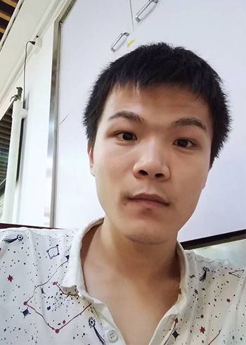
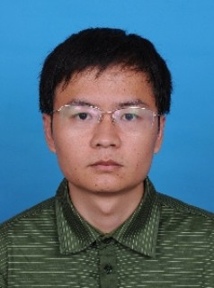

Group Leader

Prof. Yugui Yao
Professor, School of Physics Chang Jiang Chair Professor, Ministry of Education China NFS for Distinguished young, China
Central Building 721 ygyao@bit.edu.cn
Faculty
Jie Ma
First Principle Calculations, Quantum Functional Materials
Central Building 636A
majie@bit.edu.cn
Postdoc
Ph.D. candidate
Pei Yang
Central Building 105
615130174@qq.com
Runwu Zhang
Central Building 105
zhangrunwu@163.com
Maoyuan Wang
Central Building 105
mywang@bit.edu.cn
Jixun Zhang
Central Building 105
unknown
Chang Liu
Central Building 105
21199734@qq.com
Dashuai Ma
Central Building 105
mads@bit.edu.cn

Hongbo Wu
Central Building 105
260034057@qq.com
Xiaoping Li
Central Building 105
xpli@bit.edu.cn
Botao Fu
Central Building 105
fubotao2008@gmail.com
Xiaotong Fan
Central Building 105
xtfan2016@gmail.com
Liping Liu
Central Building 105
llpjaj@hotmail.com
Shan Guan
Central Building 105
sguan2012@163.com
Si Li
Central Building 105
lisi2008700221@163.com
Zeying Zhang
Central Building 105
zhangzeyingvv@163.com

Zewen Wu
Central Building 105
3120140552@bit.edu.cn
Jin Cao
Central Building 105
cao.jin.phy@gmail.com
Tingting Zhang
Central Building 105
unknown
Furu Zhang
Central Building 105
1026310696@qq.com
Yu Jian
理学楼C座201 良乡
18500923936@163.com

Xiangzhuo Wang
理学楼C座201 良乡
xiangzhuo2010@126.com
Career development after graduation
| 姓名 | 年级 | 去向 |
|---|---|---|
| 张梅（联合培养） | 2014届硕士 | 福建省福州市福清中学 教师 |
| 王雪娇 | 2013届硕士 | 山东师范大学历山分校 教师 |
| 刘峰（联合培养） | 2014届博士 | 中国科学院力学所 助理研究员 |
| 周金健 | 2014届博士 | 加州理工大学 博士后 |
| 刘铖铖 | 2013届博士 | 北京理工大学 教师 |
| 张健敏 | 2013届博士 | 福建师范大学 教师 |
| 冯万祥 | 2012届博士 | 北京理工大学 教师 |
| 丁俊 | 2012届博士 | 河南科技大学 教师 |
| 朱国宝（联合培养） | 2012届博士 | 香港浸會大学 博士后 |
| 刘翌 | 2009届硕士 | 荷兰屯特（Twente）大学 博士 |
| 明文美 | 2009届硕士 | 美国犹他（Utah）大学 博士 |
| 赵建芝（联合培养） | 2008届博士 | 中国人民大学 教师 |